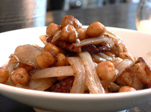

Bar Carrera
On Sabena’s strong recommendation, I took a friend for birthday cocktails at Bar Carrera on 2nd Avenue at 11th Street.
As popular as this place is, if you go at 6 pm on a weekday, it will be completely empty, and the the guy behind the counter can devote his full attention to you. All we ate was a minuscule plate of chorizo and morcilla ($3.50) and the daily special, octopus and chickpeas with olive oil and sherry vinegar ($7), pictured here:

Upon learning that it was Jake’s birthday, he brought us an itty bitty piece of cake made of white chocolate and blue cheese. I’d heard of Heston Blumenthal mixing dark chocolate and blue cheese, which he said was a result of his discovery that the two ingredients have similar flavor compounds and are therefore complementary. This cake was bizarre and excellent.
We drank a whole bottle of deliciously dry cava rosé, and I look forward to going back when I don’t have dinner waiting for me somewhere else.
Add a comment